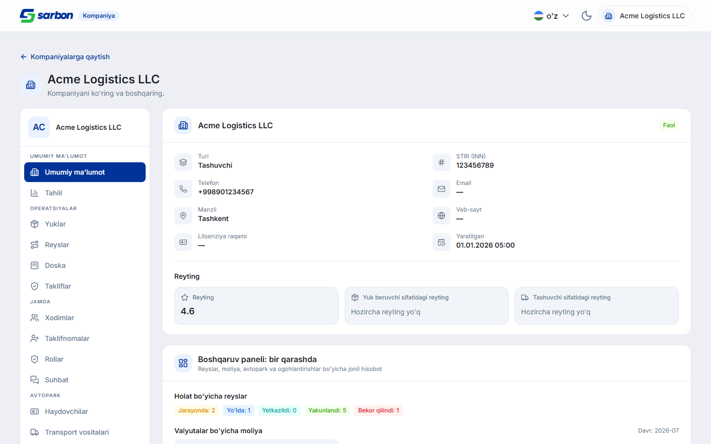
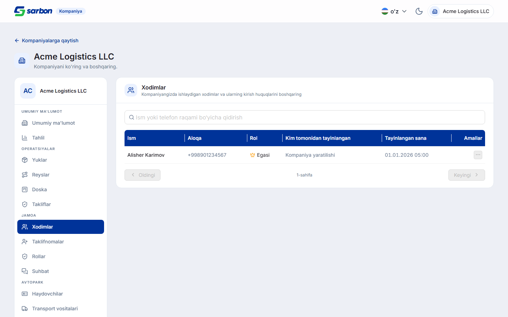
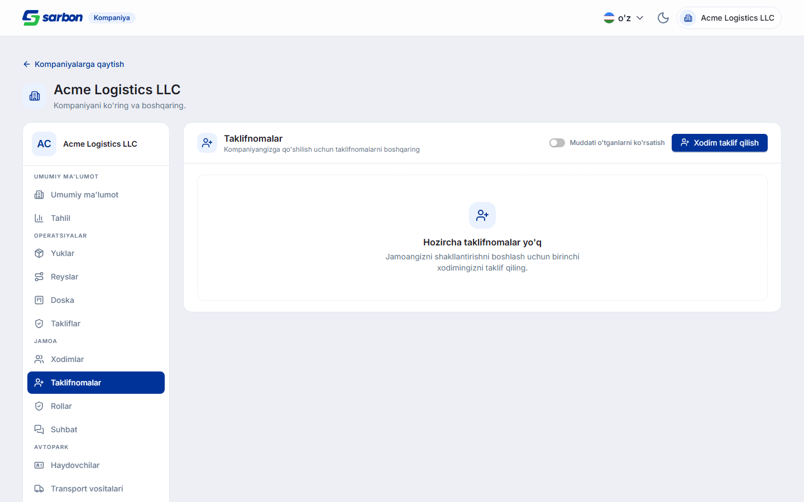
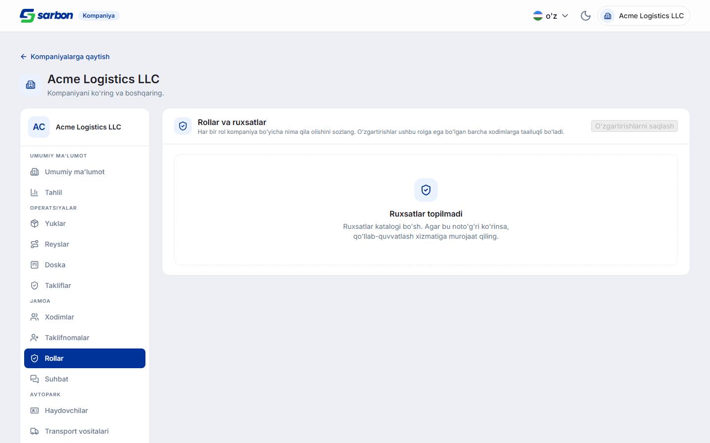
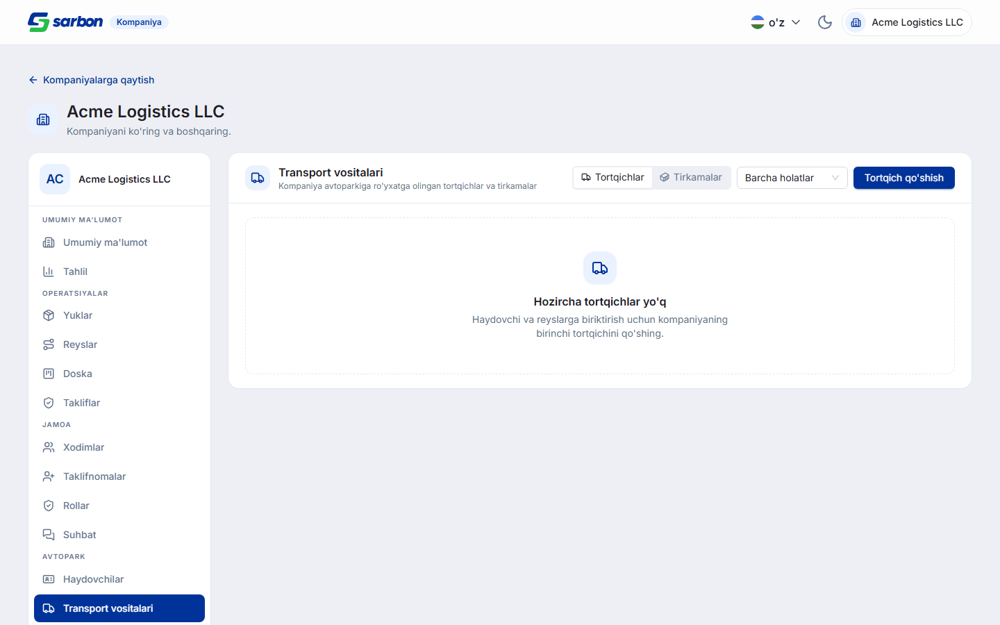
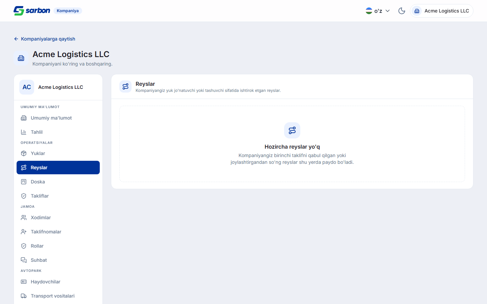
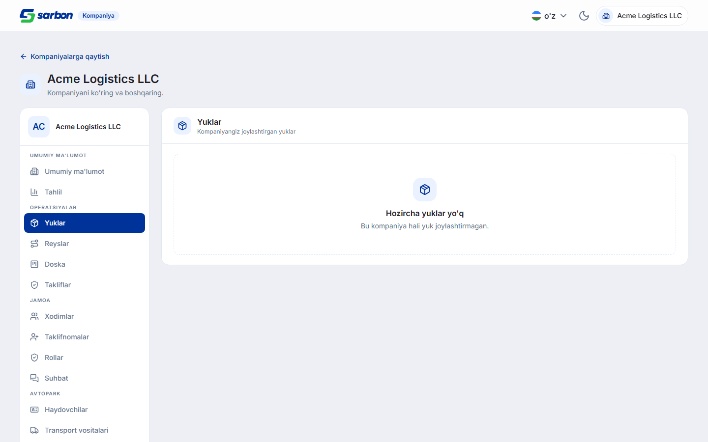

fd7bd15a «company 6 flow stages», ~126 файлов) и журнал модерации со временем
(1ebc9664) — добавлены разделами 1–8 ниже.
1 Кабинет компании — 17 разделов вместо переключателя FEATURE
Страница /company/:companyId из двухвкладочного переключателя «Профиль | Груз»
превратилась в полноценный кабинет с боковым меню (как в основном приложении). Разделы
сгруппированы: Обзор (обзор, аналитика), Операции (грузы, рейсы, доска, офферы),
Команда (сотрудники, приглашения, роли, чат), Автопарк (водители, ТС, сборки, ТО),
Финансы (финансы, документы), Журнал (аудит, настройки). Каждый раздел — отдельный
ленивый чанк <Id>Section.tsx + чистый логический модуль company<Id>.ts
+ юнит-тест. Видимость раздела гейтится по правам пользователя (me/permissions).

2 Команда: приглашения, сотрудники, роли FEATURE
Флоу найма целиком на фронте:
- Приглашения — создать (телефон + роль), список, повторно отправить, отозвать.
- Сотрудники — смена роли, тонкая настройка прав (grant / deny / inherit по каждому ключу), удаление. Синтетическая строка Owner защищена (не редактируется).
- Роли — оверлеи прав на роль (действуют ретроактивно на всех носителей роли).



3 Автопарк: ТС, сборки, ТО, водители FEATURE
Тягачи и прицепы (CRUD + запуск/завершение ТО), сборки (тягач+прицеп+водитель), журнал ТО, ростер водителей. Автопарк недоступен компаниям-грузоотправителям (SHIPPER) на бэке — учтено в правах.

4 Операции: грузы, рейсы, финансы FEATURE
Грузы компании (все статусы), рейсы (список с фильтрами + назначение куратора-менеджера), финансовый свод по валютам и расходы по рейсам. Ключевое правило домена — без конвертации валют: прибыль считается строго внутри одной валюты, разные валюты не суммируются.



5 Приём приглашения + групповой чат FEATURE
Достроена сторона приглашаемого: корневая страница /accept-invite?token=…
(вне /company, без гардов — приглашённый ещё не авторизован). Неавторизованного
бросает на логин через одноразовый breadcrumb в sessionStorage, после логина
CompanyLayout возвращает на /accept-invite — токен едет в URL возврата.
Раздел «Чат» кабинета — лаунчер: открывает групповую беседу компании в общем чате
приложения (/{lang}/chat). Пять состояний приёма (успех / не найдено / истёк /
несовпадение телефона / лимит мест) разобраны в companyAcceptInvite.ts.
6 Профиль компании: «мои компании» + AntdProvider uz_UZ FIX
В профиль компании добавлен раздел «мои компании» (список + переключение активной
компании через CompanyProfileCompanies). AntdProvider для узбекского
теперь мапит uz → uz_UZ (было en_US, из-за чего собственный хром antd —
«(optional)», фильтры, пагинация — шёл на английском впереди основного языка).
7 Админ · журнал модерации со временем FEATURE
В /admin/moderation-log (GET /v1/admin/moderation/log) добавлены отдельные
колонки requested_at (когда объект отправили на модерацию) и decided_at
(время решения) — раньше было только одно «Дата» (created_at), и оператор не видел,
когда запись вошла в модерацию и когда её решили. (SARB-ADMIN, коммит 1ebc9664.)
8 Админ · Водители и Диспетчеры — эффективный Account-статус FIX
Объект Driver несёт два статусных поля: сырое nullable account_status
и вычисляемое effective_status = COALESCE(NULLIF(TRIM(account_status),''),'active').
Фронт рендерил сырое поле — большинство водителей показывались как «No data», и по ним падал
activate (null-водитель уже активен; /moderation/activate не принимает null
как источник, а /moderation/inactive — принимает). Отсюда «деактивируй, потом активируй».
- Колонка «Account» теперь показывает эффективный статус (null → Active); то же значение в сортировке, фильтрах и
isBlocked. - Действия строки сведены к View · Edit · Delete — вся модерация переехала в модалку редактирования.
- В модалке правятся все три оси: Account (activate/inactive/block/unblock, гейтится по статусу), KYC (accept/reject), Moderation/допуск (approve/reject/send).
- «Activate» скрыт для уже активного водителя (раньше давал 400 на null-статусе); «Send to moderation» задизейблена, пока статус ≠ Rejected (у водителя resubmit строго
rejected → pending). - Диспетчеры — тот же паттерн, но ось жизненного цикла —
moderation_status.


9 Проверка
| Гейт | Результат |
|---|---|
pnpm build (tsc -b + vite) | exit 0 |
eslint --max-warnings 0 (изменённые файлы) | чисто |
vitest run | 1754 / 1754 (165 файлов) |
Кабинет компании — qa/verify-company-workspace.mjs | 17/17 разделов, 0 «сырых» ключей i18n |
Приём приглашения — qa/verify-accept-invite.mjs | 7/7 состояний |
| Локали | 15/15 (company.* — en/uz/ru + плейсхолдеры) |
| Живой прогон (staging, admin) | 10 скриншотов, поведение подтверждено |
fd7bd15a«company 6 flow stages» (~126 файлов) — кабинет компании: 10 разделов*Section.tsx+ 18 модулейcompany*.ts+ 18 тестов,companyWorkspaceTypes.ts,companyWorkspaceSections.ts,CompanyWorkspaceSidebar,CompanyDetailPage, профиль «мои компании», приём приглашения, чат-лаунчер, роутер/эндпоинты/права, qa-гарнессы.1ebc9664«журнал модерации со временем» (~30 файлов) —AdminModerationLogPage+moderationLogUtils, чат-раздел компании (ChatSection/companyChat).09b83751«moderation fix» (~28 файлов) —adminLifecycleStatus.ts(new),AdminModerationActions,AdminDriver/Dispatcher{Page,EditDrawer},AdminDriverStatusEditor(new), локали ×15.